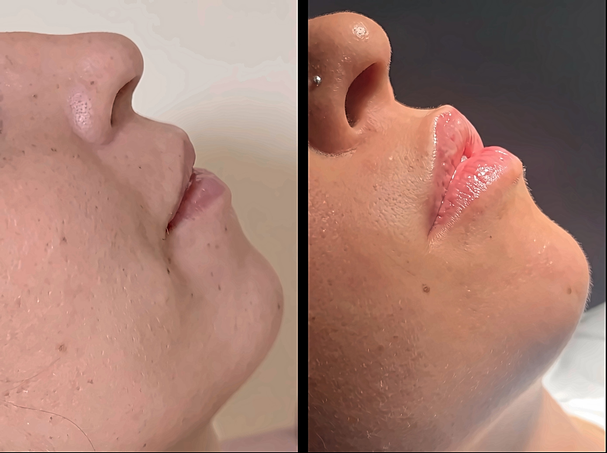
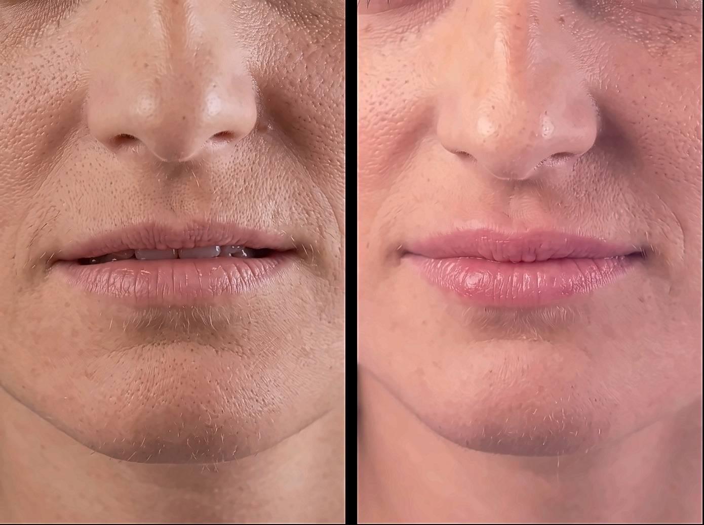

Fotografie di casi reali. I risultati variano da persona a persona.
Usiamo il filler per uno scopo specifico: restituire volume. Vale la pena essere chiari, perché il volume è ciò che le prime fasi dell’invecchiamento tendono realmente a sottrarre. Quando il sostegno sotto la pelle si assottiglia, compare un incavo sotto gli occhi, lo zigomo si appiattisce, una linea che prima compariva solo con il movimento comincia a rimanere visibile anche a riposo. Quando il filler viene collocato correttamente, restituisce ciò che è venuto a mancare al di sotto della pelle e la superficie si assesta di conseguenza.
Lavoriamo secondo lo stesso principio anche nelle aree in cui il volume è sempre stato naturalmente ridotto: un mento leggermente arretrato, zigomi poco definiti, labbra assottigliate o da sempre sottili. Il trattamento è rapido, il fastidio generalmente contenuto e il recupero minimo o assente: la maggior parte delle nostre pazienti riprende le normali attività subito dopo.
I filler hanno anche dei limiti, ed è importante conoscerli prima del trattamento. Non tendono la pelle rilassata e non possono correggere un invecchiamento strutturale avanzato. Utilizzati con questo intento, possono aggiungere peso a un viso che sta già perdendo sostegno; è proprio per questo che eccessi e sovraccarichi possono conferire un aspetto appesantito anziché ringiovanito.
Quando il problema principale è il rilassamento dei tessuti, il Dr. Uccellini glielo dirà con chiarezza e le suggerirà piuttosto altre alternative quali una blefaroplastica o un lifting, lasciando al filler ciò che sa fare meglio: rifinire il risultato.
Cosa è più adatto nel Suo caso - o quale combinazione di procedure - dipende dai cambiamenti che il Suo viso ha subito e dove. È questo che il Dr. Uccellini stabilirà insieme a Lei prima di procedere con qualsiasi trattamento.